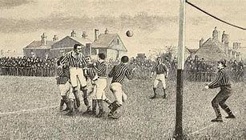

1.Comienzos del fútbol
Se podría decir que los orígenes del fútbol se remontan al siglo III a.C. en China.
Aunque, la historia del fútbol se considera a partir de 1869, año de fundación de la Asociación Inglesa de Fútbol.

Tras esto fue expandiendose por Europa hasta llegar a España